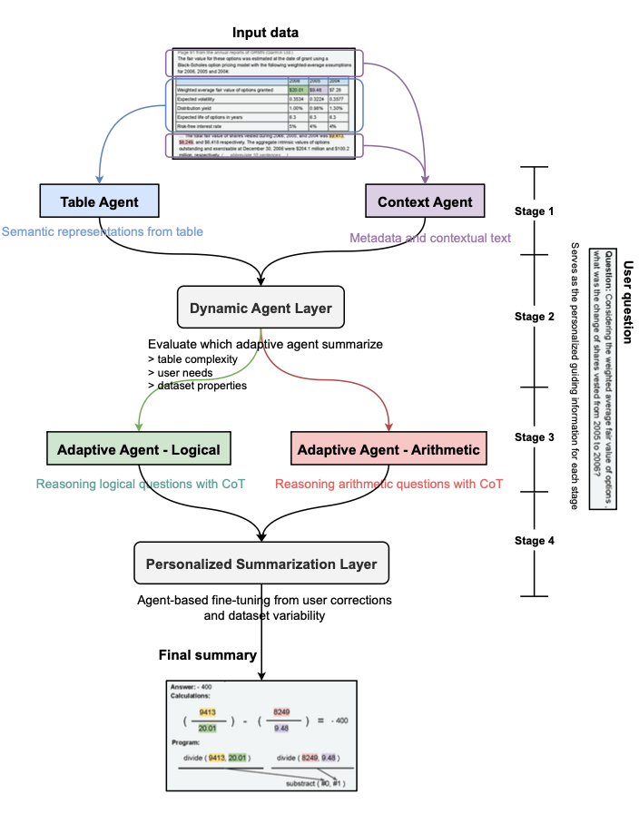
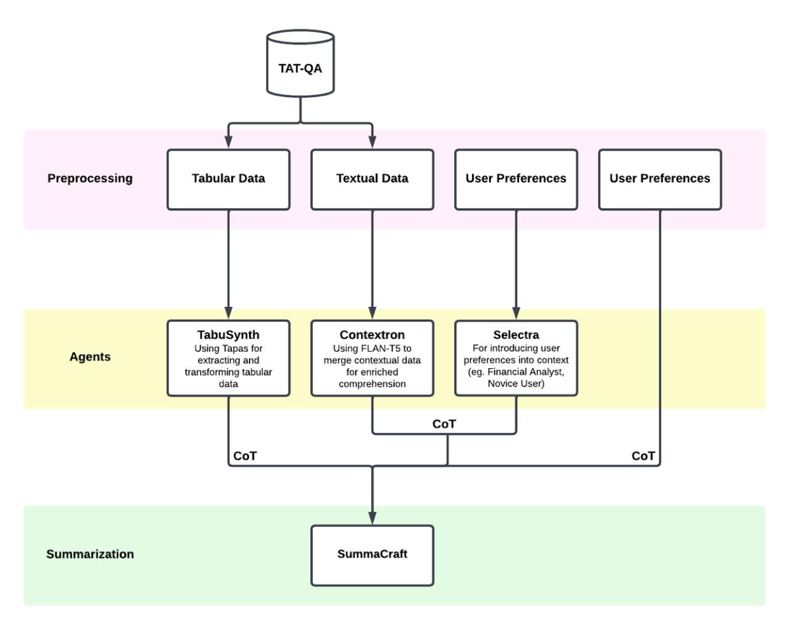

Breaking down complex table-text reasoning into specialized tasks
Financial documents mix tables with narrative context. Single models struggle with this. I built a system that uses retrieval and specialized agents to handle numerical reasoning, logical inference and personalization.
TAT-QA is a benchmark where every question requires looking at both a table and text. Models fail at this consistently.
Multi-step calculations break down. Models hallucinate numbers or lose track of intermediate steps.
Text describes the table, but models fail to map descriptions to specific rows and columns.
Financial reports are long. Cramming everything into context means noise overwhelms signal.
Arithmetic questions need different reasoning than logical questions, but single models treat them the same.
Here's a real question from TAT-QA. I'll show you how both pipelines handle it.
| Contract Type | 2018 ($M) | 2019 ($M) |
|---|---|---|
| Fixed Price | 1,146.2 | 1,452.4 |
| Cost Plus | 67.5 | 68.8 |
| Other | 56.7 | 44.1 |
The first approach uses a router to classify questions and send them to specialized agents.

The router sees "percentage change" and "revenues" and classifies this as an arithmetic question. It routes to the Financial Agent.
TAPAS pulls the relevant numbers from the table:
Gemini 2.5 Flash uses Chain-of-Thought to work through the math:
Based on detected user type (financial analyst), it formats a technical response:
Notice how the router only passes the question to downstream agents. The Financial Agent never sees the context about "time-and-material deals" or the company's strategic shift. It can calculate the percentage, but it misses why the numbers changed.
The second pipeline uses retrieval to ground context and passes full reasoning traces forward.

BGE-large-en-v1.5 encodes the question into a 1024-dimensional vector.
Vector search retrieves the top-3 most relevant passages from the full financial report:
Instead of processing 47 paragraphs (token overflow), the Context Agent gets exactly the 3 most relevant passages. This is the RAG innovation.
TAPAS extracts structured facts with CoT reasoning:
FLAN-T5-XL processes only the top-3 retrieved passages and condenses them:
Because retrieval filtered to relevant passages, the Context Agent focuses on what matters instead of generic boilerplate from the full report.
FLAN-T5-small infers user type from question phrasing:
Mistral 7B receives table facts, condensed context, persona and all CoT traces:
RAG solves token limits: Instead of 47 paragraphs (exceeds FLAN-T5-XL's context), we pass 3 focused passages.
Context flows forward: SummaCraft sees not just "23.2%" but the reasoning about strategic shifts and defense contracts.
CoT traces enable debugging: If the answer is wrong, we can trace back to see where each agent's reasoning broke down.
✓ Fast classification
✓ Simple architecture
✗ Router misclassifies hybrid questions
✗ Context lost at routing step
✗ No retrieval, processes all text or nothing
✓ Retrieval filters noise
✓ Context preserved across stages
✓ CoT traces enable transparency
✗ More complex to implement
✗ Requires embedding all passages upfront
Single-shot Chain-of-Thought prompting consistently beats zero-shot across all components.
Component-level metrics: Table Agent F1 25.3%, Context Agent F1 29.4%. These reflect the difficulty of extraction and grounding on complex financial data, but don't fully capture context integration quality (the real innovation here).
1024-dim embeddings for semantic retrieval. BAAI's encoder beats keyword matching for passage relevance.
Facebook's vector search. L2 distance over 2,757 indexed contexts with sub-millisecond lookup.
Pre-trained table QA model. Understands cell structure and aggregation that general models miss.
Instruction-tuned for text condensation. Processes retrieved passages into grounded context.
Lightweight persona classifier. Zero-shot prompting adapts to new user types without retraining.
Final orchestration. Synthesizes all agent outputs with single-shot CoT prompting.